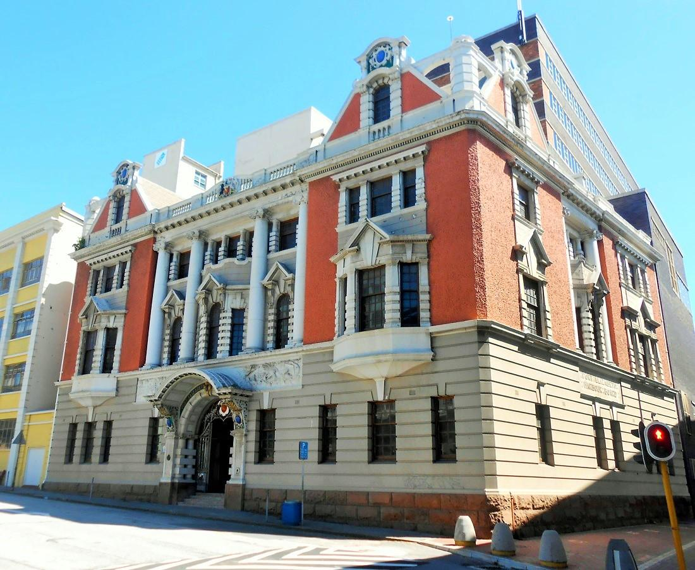
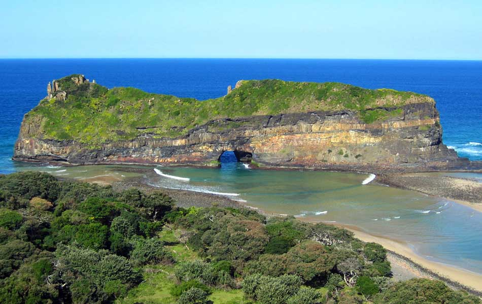
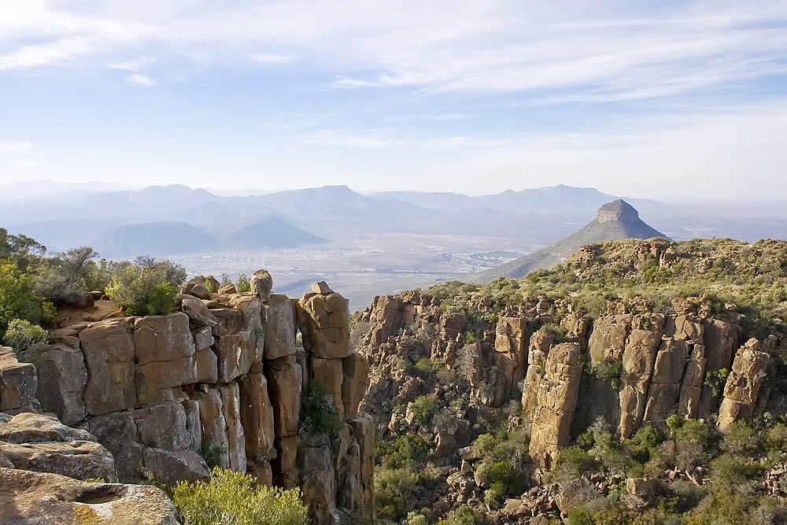
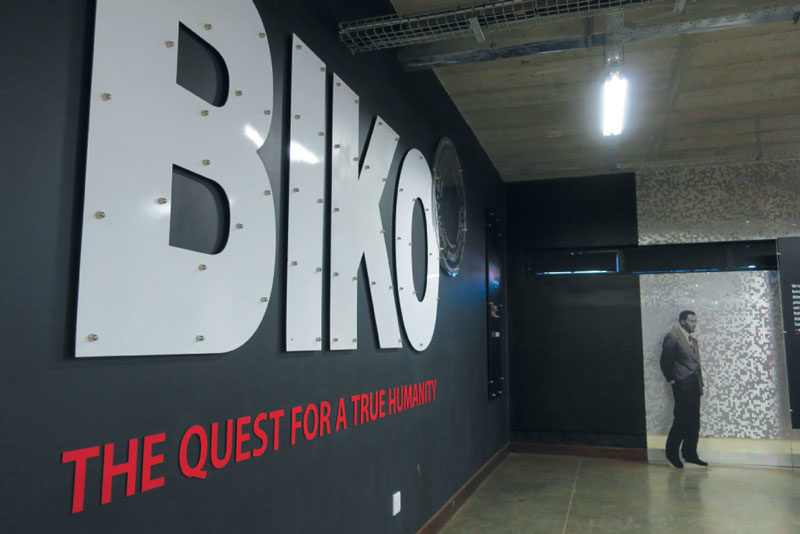
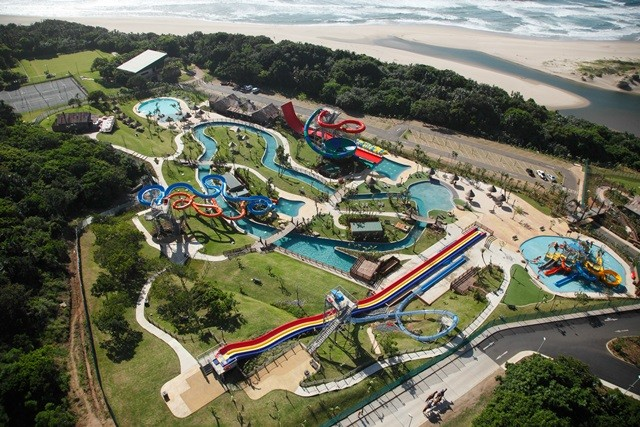
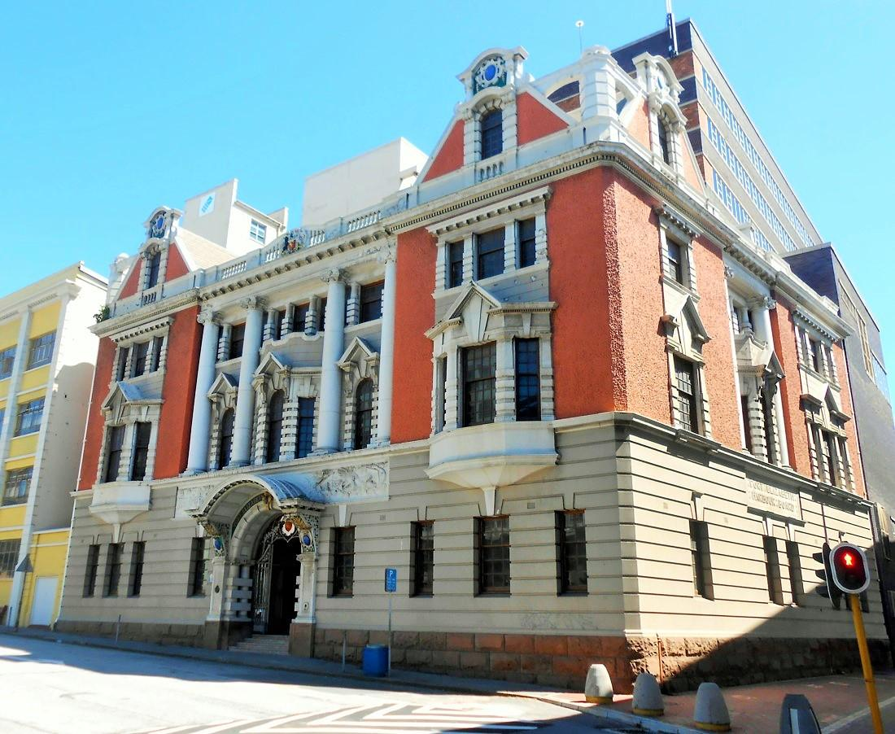
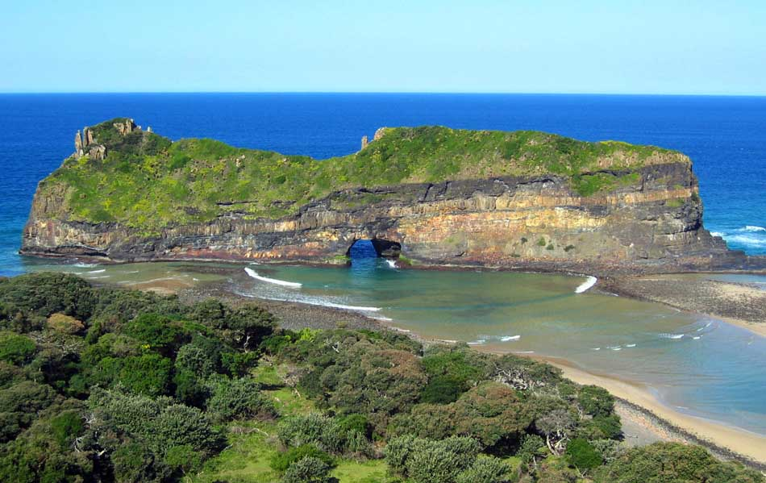
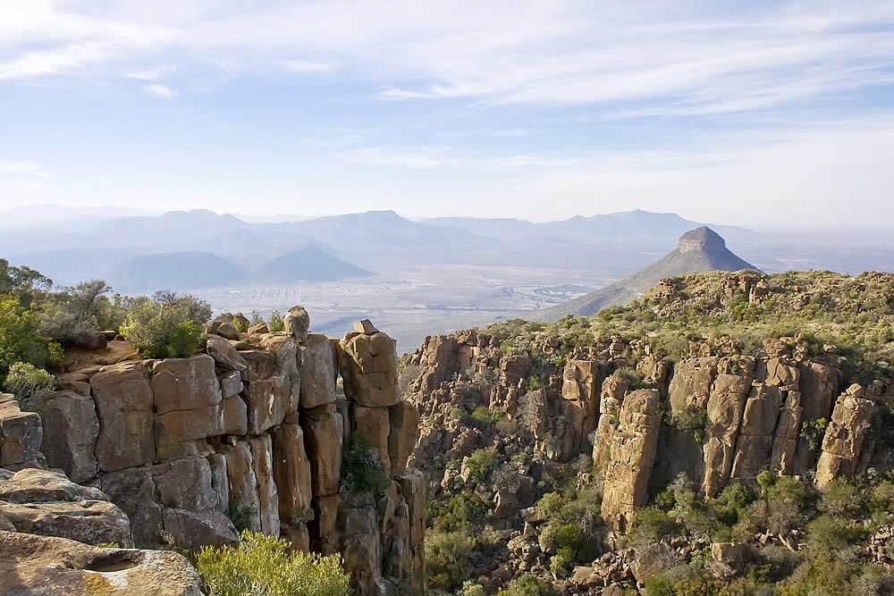
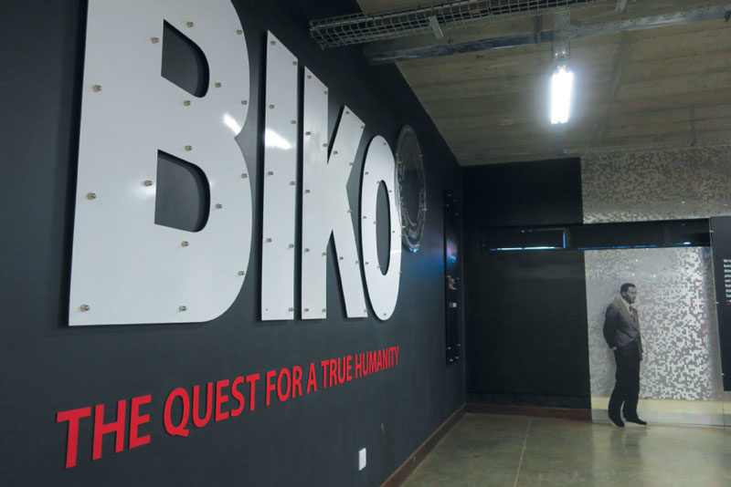
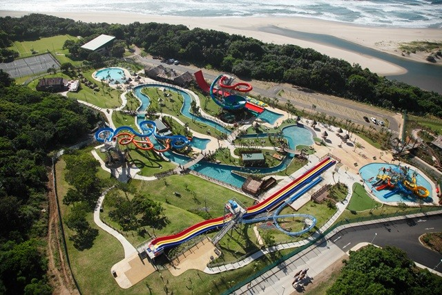

Eastern Cape has an extremely diverse landscape. The western interior is largely arid Karro, while east is well watered and green. This province offers a wide array of attractions, icluding 800km of untouched and pristine coastline along with some particullary splendid beaches , and "Big Five" viewing in a malari-free environment.
The Aldo Elephant National Park, situated in Port Elizabeth was proclaimed in 1931. Its 743 square kilometres offers sanctuary to 170 elephants, 400 Cape buffalos an 21 black rhinos of the very scarce Kenyan sub-species.
The province is the location of SA's only Snow skiing resort, Triffindel,
which is situated near the hamlet of Rhodes in the southern Drakensburg on the slopes of Ben Macdhui, the highest mountain paek in the Eastern Cape (3001m).
The National Arts Festival, held annually in Grahamstown, is Africas largest and colourful cultural event, offering a choice of the very best of both the indeginous and imported talent. Jeffery's Bay is an area with some of the country's wildest coastline, which is backed by Africa's most spectacular sub-tropical rainforest. Famous for its "supertubes", probably SA's longest and most certainly good wave, its charge with a surf vibe as relaxed as its friendly, and thi tends to soften the effect of the wealthy set who have made this part of the coast therir own.
The rugged and unspoilt Wild Coast is a place of spectacular scenery, and graveyard of many vessels.